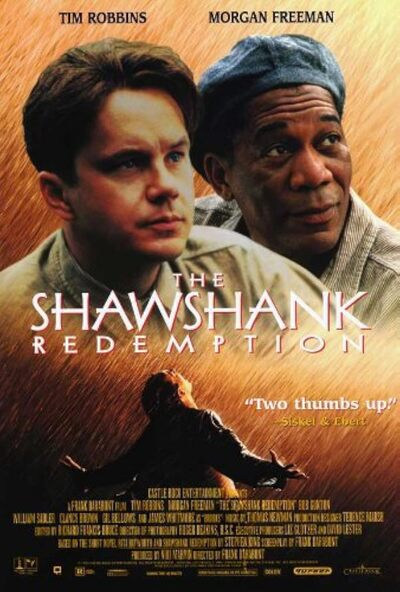

This movie is about hope, friendship, and resilience.The story explores themes of hope, friendship, and redemption as Andy endures the hardships of prison life. Despite facing immense challenges, Andy maintains his innocence and uses his intelligence and resourcefulness to transform Shawshank, gaining the respect of both the guards and his fellow inmates. Over time, his influence extends beyond the walls of the prison, leading to an unexpected and emotional resolution.
Movie Details
- Director:
- Frank Darabont
- Release Year:
- 1994
- Main Actors:
- Tim Robbins, Morgan Freeman
My Favorite Characters:
- Andy Dufresne
- Ellis "Red" Redding
- Warden Samuel Norton
- Brooks Hatlen
- Heywood
Learn more about this movie on IMDb: The Shawshank Redemption .